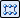
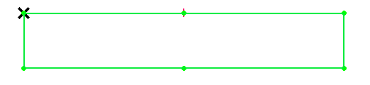

Create a 2D rectangular pattern of sketches
This procedure is for ordered modeling.
-
Create a new sketch by choosing the Home tab→Sketch group→Sketch command, and then select a sketch plane. To use an existing sketch, select the sketch in Pathfinder and click Edit Profile.
-
Choose Home tab→Features group→Rectangular Pattern

. -
Select sketch elements to pattern, and then right-click to accept.
You can add or remove geometry by editing the pattern. Go to pattern edit and click on the Select Step
 . Select the sketch elements to add or press Shift+click to delete elements from the
existing pattern.
. Select the sketch elements to add or press Shift+click to delete elements from the
existing pattern. -
Define the pattern profile.
-
Click where you want to start the pattern rectangle.
-
Click where you want to end the pattern rectangle.

-
Use the options on the Rectangular 2D Pattern command bar (ordered sketch) and the Stagger Options dialog box to define characteristics of the pattern, such as the number of pattern occurrences, pattern rectangle size, and occurrence spacing.
-
-
Click Close Sketch.
Deleting pattern occurrences
-
When deleting the pattern definition, all the pattern occurrences are deleted and only the master geometry remains.
-
When deleting the master, all occurrences are deleted and the pattern definition remains as is.
-
When deleting an occurrence of a pattern, that occurrence suppresses.
How do I
Construct an ordered rectangular pattern featureConstruct an ordered circular pattern feature
Create a 2D circular pattern of sketches
Construct a Fast Pattern
Construct a Smart Pattern
Define the pattern plane
Learn more
Pattern featuresRectangular Pattern (ordered)
Circular patterns
Look up more details
Pattern command (ordered)Rectangular Pattern command bar (ordered sketch)
Circular Pattern command bar (ordered sketch)
Pattern command bar